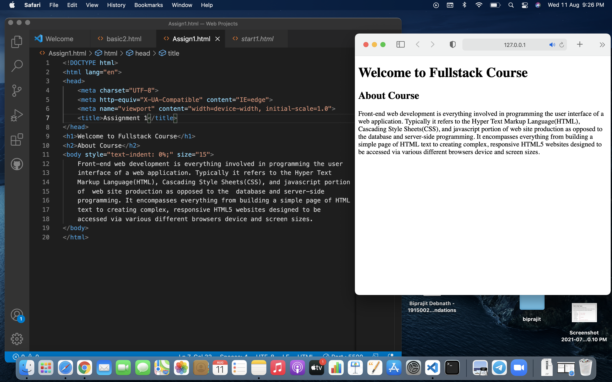
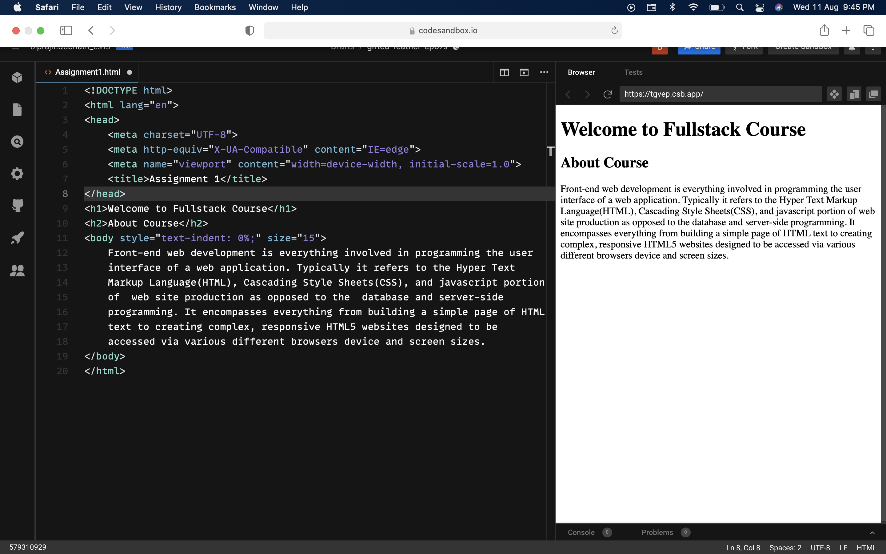

Welcome to Fullstack Course
About Course
Front-end web development is everything involved in programming the user
interface of a web application. Typically it refers to the Hyper Text
Markup Language(HTML), Cascading Style Sheets(CSS), and javascript portion
of web site production as opposed to the database and server-side
programming. It encompasses everything from building a simple page of HTML
text to creating complex, responsive HTML5 websites designed to be
accessed via various different browsers device and screen sizes.
Output

